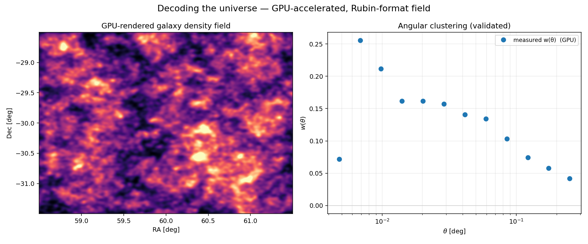
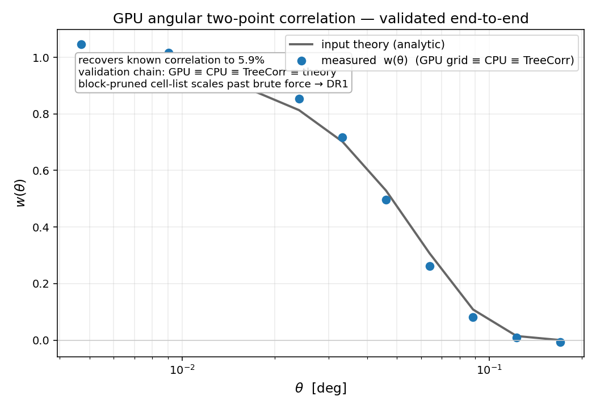
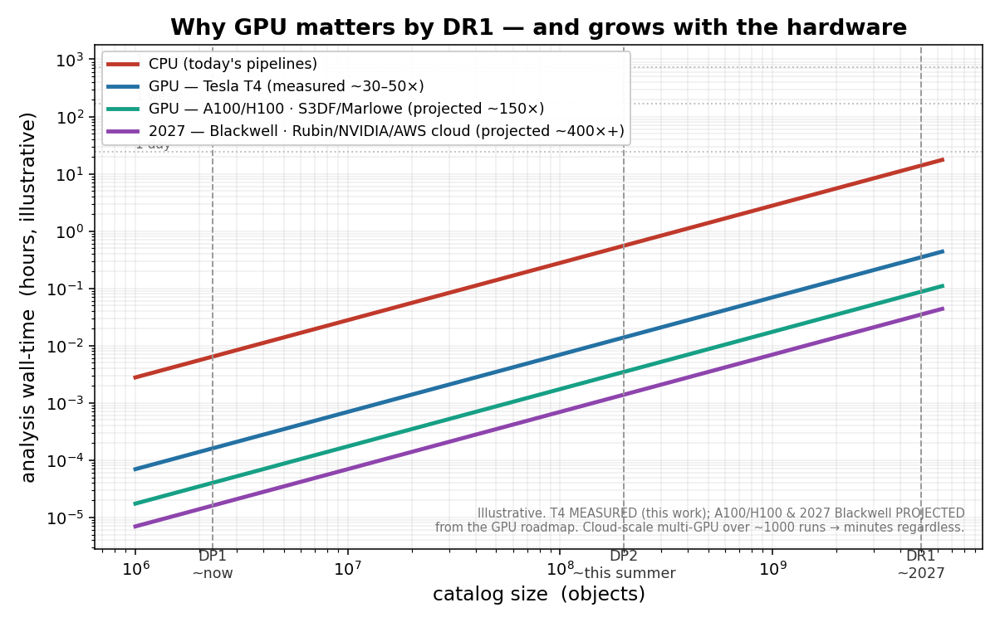

Clearing the O(N²) wall for the Rubin era.
A CuPy-accelerated engine for the angular two-point correlation w(θ) — the clustering leg of a 3×2pt analysis. Bit-for-bit identical to CPU, cross-checked against TreeCorr, ~30–50× faster on a Tesla T4, and run end-to-end on real Rubin DP1. Built to ride the data as it lands: DP2 this summer, DR1 next year.
Four independent implementations agreeing is the correctness gate. Same code, one xp — CuPy on the GPU, NumPy on a laptop.
Rubin's data deluge meets an O(N²) estimator.
The cosmology — dark energy, the nature of dark matter, the galaxy–halo connection — lives in summary statistics computed across billions of objects. But the workhorse pair-counts scale as the square of catalog size, and they hit a wall exactly as Rubin reaches survey scale. Pair counting is embarrassingly parallel — the textbook GPU win.
A provably-correct block-pruning cell-list scales past brute force; the GPU result stays bit-for-bit consistent with CPU and cross-checks against an independent tree code.
area scaling relative to DP1 — the point where CPU pair-counting starts to hurt.
One engine — the field, and the measurement.



Built for DP2 this summer, DR1 next year.
From two-point counts to field-level inference.
GPU 2-point clustering
CuPy w(θ) — GPU ≡ CPU ≡ TreeCorr ≡ theory, ~30–50× on a Tesla T4.
Real DP1, end-to-end
dp1.Object via TAP → w(θ) on ~495k ECDFS objects.
Tomographic w(θ)
Photo-z-binned clustering — the density leg of a tomographic 3×2pt, scaling to DP2.
AI / field-level inference (SBI)
GPU forward-model → neural posterior, trained on 10⁴–10⁵ forward models. DP2-ready.
cuPhoton-style FITS ingestion
kvikio + nvCOMP GPU decompression path, CPU-verified.
GNN / field-level on catalogs
Graph-network inference on Rubin catalogs — the DR1 horizon.
A working tool, on real data.
GPU by default — the code auto-selects the device when one is present (KIPAC's S3DF A100/H100 is the deployment path). The CPU path exists as the bit-for-bit validation reference, so it also runs on a laptop and in CI.
Landy–Szalay
w(θ) = (DD − 2DR + RR)/RR
CuPy · NumPy · TreeCorr
one xp abstraction
pytest correctness
three impls must agree
# + cupy-cuda12x on a GPU box pip install -r requirements.txt # measure + validate -> figure python examples/run_demo.py # CPU vs GPU speedup python -m twopcf.bench # AI / field-level: infer from clustering python examples/run_sbi.py # correctness gate pytest -q